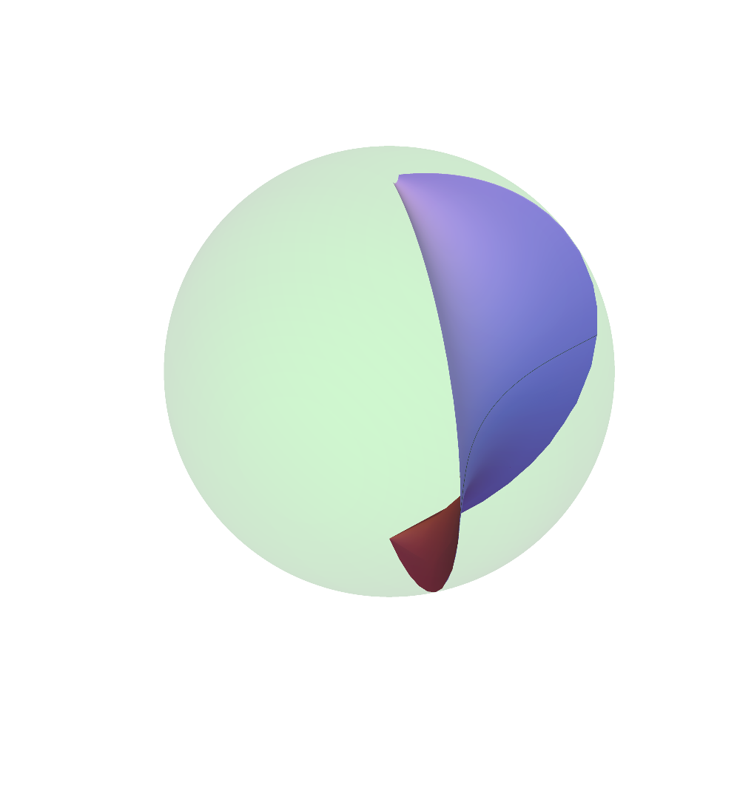
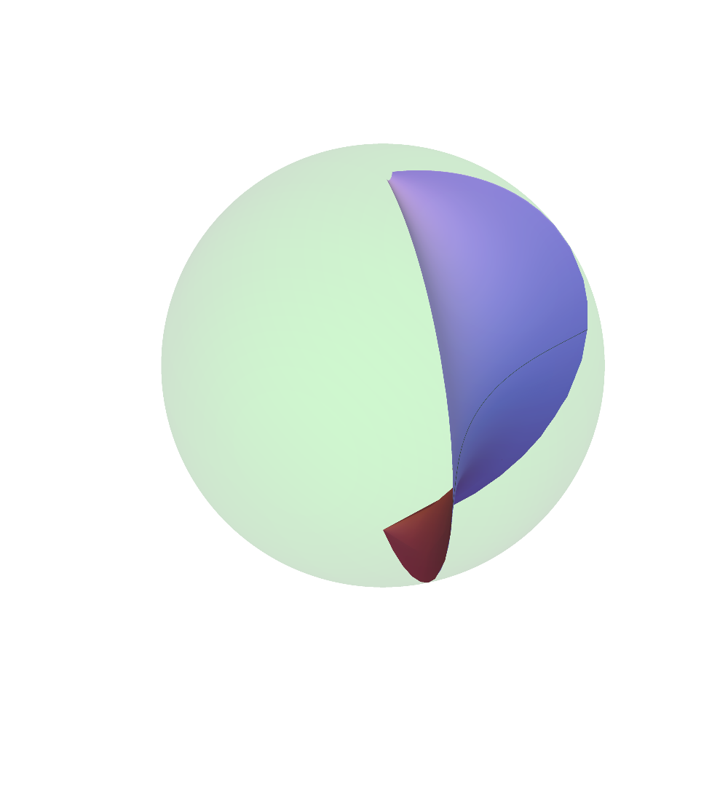

Keaton Quinn
 

I am a Visiting Assistant Professor of mathematics at Boston College.
My research interests include Hyperbolic geometry, Teichmüller theory, and geometric structures on surfaces. I was a graduate student at the University of Illinois at Chicago and a student of David Dumas . Before that I was at Michigan State University where I completed the Advanced Track Math degree.
My CV can be found here.
Papers
- Asymptotically Poincaré surfaces in quasi-Fuchsian manifolds. Proceedings of the American Mathematical Society, 148 (2020), 1239-1253. doi.org/10.1090/proc/14850
Notes
This serves as a place to collect the notes I've made on random topics thoughout my work.
- The double tangent bundle
- Complex analysis and Riemann surfaces
- The Second Derivative Test on Riemannian manifolds
- The Schwarzian derivative
- Isometries of real normed vector spaces
- Bilinear forms and the adjoint of a linear map